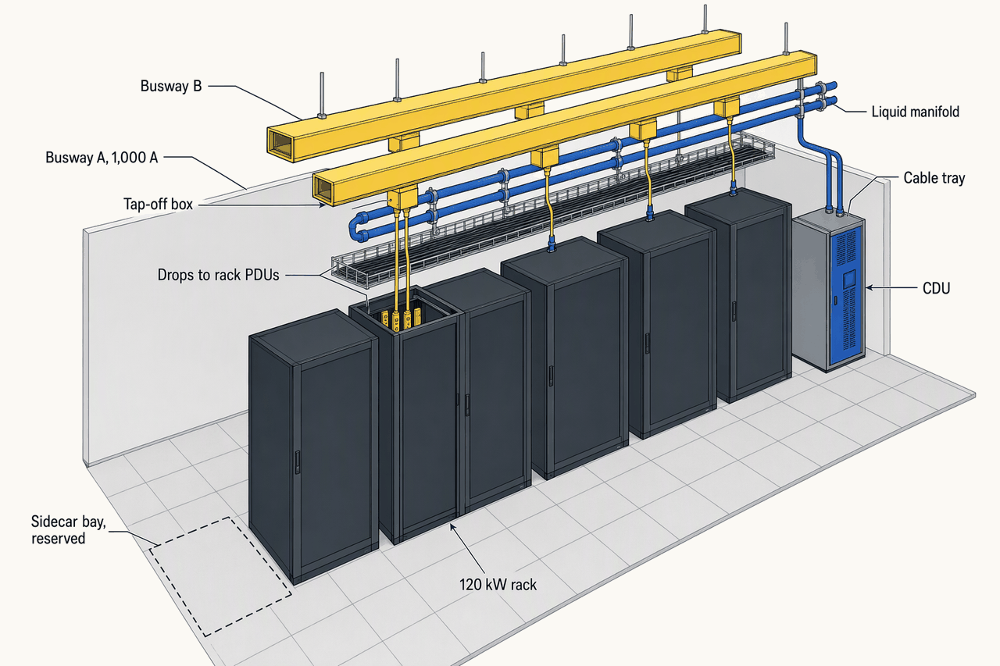
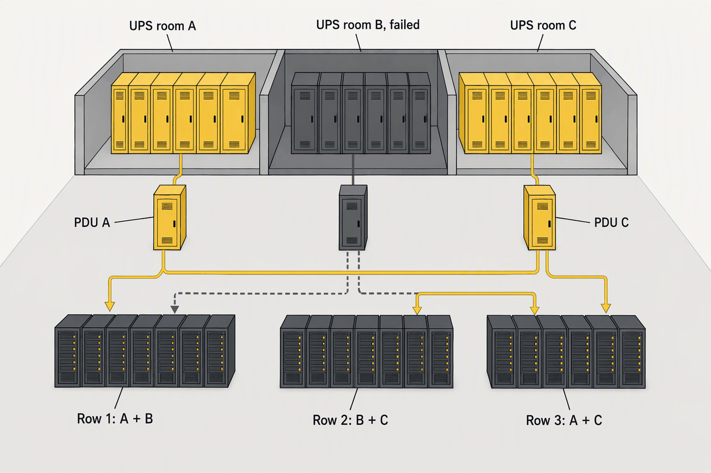
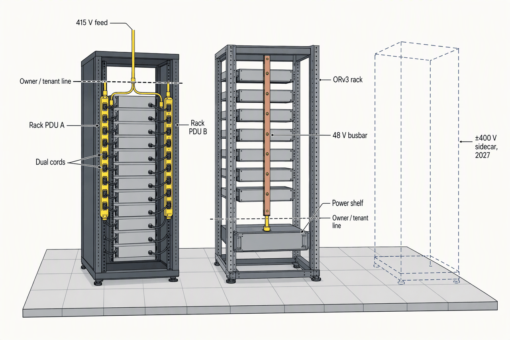

Power Systems II: Distribution and Redundancy
Deep detail and sources: the appendix for this topic. Short version: sixty words.
Topic 5 built the chain that makes power clean. Topic 5 ends at the UPS output bus, where clean power is available to distribute; Topic 6 starts at that same bus. From here to the server the questions change: what voltage reaches the rack, which single failure a rack survives, and how much installed capacity must sit idle to guarantee it.
- ~4 msA static transfer switch moving a load between sourcesFast enough that a single-corded server never notices; the one single point the design accepts
- 34.5 kWPer 415 V / 60 A circuit at 80%, against 17.3 kW at 208 VTwice the power through the same breaker; why AI racks left 208 V
- 50 → 67 → 75%Usable share of installed capacity at 2N, 3M2, 4M3Redundancy is bought in idle megawatts
- ~3×Fault current at the PDU when the isolation transformer leaves, 17.6 → 56 kAThe transformer was also a fault-current limiter
- 18,000 AWhat a 1 MW rack draws at 54 VWhy 48 V ran out of copper and DC moved to ±400 V
- 2009Uptime removed "expected downtime per year" from the Tier StandardThe nines people quote are legacy arithmetic, not certification
The chain
- UPS output bus, 480Y/277 V, one 2.5 MW block
- 480 V three-phase, clean; the guarantee Topic 5 built
- PDU, 750 kVA–1 MVA, 480 → 415/240 V autotransformer, two branch panels
- 415 V three-phase to the row; fault current now ~56 kA
- Busway run A or B, or an RPP in Zone 1
- 250–1,000 A per run; tap-offs twist-lock while live
- Tap-off box, or RPP breaker and whip
- One branch circuit, 30–60 A three-phase
- Rack PDU, 415/240 V, 30–60 A
- 240 V line-to-neutral at every outlet, ~34.5 kW per 60 A circuit
- Dual-corded server, PSU A and PSU B, each sized for 100%
Six boxes and one decision, the voltage. At 415/240 V the isolation transformer leaves the chain and a 60 A circuit carries twice the kW; the bill is paid in fault current, not in copper (APX-power-2 §1).
| Scheme | L-N / L-L | Transformer before the server | PSU efficiency | kW per 60 A circuit at 80% | Note |
|---|---|---|---|---|---|
| 208/120 V | 120 / 208 | Yes, 480 → 208 isolation | ~82% at 120 V, ~84% at 208 V | 17.3 kW | Legacy; about twice the circuits |
| 415/240 V | 240 / 415 | None, or a small 480 → 415 autotransformer | 85.5% at 240 V | 34.5 kW | Raises fault current; the reference hall |
| 480/277 V | 277 / 480 | Must step down; 277 V exceeds the 240 V PSU limit | n/a | n/a | Distribution only |
| 400/230 V, EU | 230 / 400 | None | ~89% chain | ~33 kW | Native EU gear |
The server takes 240 V and everything upstream is arranged to deliver it: 3.5 PSU points over 120 V, half the circuits of 208 V, and no PDU transformer to buy, cool or lose 1–2% in. 480 V stays a distribution voltage because servers cannot take 277 (APX-power-2 §4).
The autotransformer, and why a transformer was there at all
- A PDU transformer exists to change voltage and to create a separately derived system, a new neutral and ground-fault reference. The North American legacy was 480 V delta down to 208/120 V wye for servers that wanted 120 V.
- At 415/240 V the UPS can feed the busway directly. Because Topic 5 fixed the UPS output at 480Y/277 V, each reference-hall PDU carries a 480 → 415/240 V autotransformer, about 90% smaller and cheaper than a 208 V isolation transformer.
- The 60 A arithmetic: √3 × 415 V × 60 A × 0.8 ≈ 34.5 kW. One vendor quotes 39.9 kW for the same circuit without the 80% derate; the chapter uses the derated figure.
Row distribution
| Dimension | Busway, overhead track | Cable-and-RPP |
|---|---|---|
| Day-one capex | Higher | Lower |
| Install labour | Prefab, ~4–5 pieces per 40 ft | Conduit, pulls, terminations |
| Change without shutdown | ✓twist-lock tap-off, live | ✗new home-run, hot-work permit |
| Cost to add a drop | ~$350 plug, owner fits it | Contractor mobilisation |
| Ampacity | 40–1,250 A track; feeders to 6,300 A | Breaker-limited |
| Location | Overhead | Underfloor or overhead |
| Best fit | Dense, changing | Small, stable, low |
Busway costs more on the day it is hung and pays back at the first change, which in an AI hall is the first tenant. Cable-and-RPP keeps Zone 1 because 8 kW racks do not move (APX-power-2 §3).

The ceiling over an AI pod is the most contested volume in the building: power, water and fibre all arrive from above. Topics 7 and 9 will each claim their share of what this picture shows, and the sidecar bay is the space this chapter keeps for a decision it does not take.
When a path fails
- A-side PDU input breaker opens
- busway A dead; every A rack PDU dark
- Every dual-corded PSU B takes 100%
- why each side was sized for the full load
- Single-corded gear rides its rack STS
- ~4 ms; the one single point the design accepts
- Survivor runs at 100% until A returns
- metering proves the A/B mapping held
- MTTR is now the number that matters
Nothing switches for dual-corded load; the failure is absorbed by a sizing rule, ≤ 50% per side, that has to be enforced every day. Big central STSs are avoided because they turn one failure into a row (APX-power-2 §2, APX-power-2 §5).
The failure the A/B rule does not cover
- A load fault on a shared bus can propagate to every load on that bus, single- and dual-corded, if the bus fails before the branch breaker clears (Vertiv TN-00011). Selective coordination is the defence; see grounding and protection below.
- The rack STS monitors phase angle, thyristor state, breaker state and voltage on both sides. It has more failure modes than an electromechanical ATS, and it is placed at the rack so its failure takes one device, not a row.
- Per-outlet metering on the rack PDU is how a rack found running on one PSU gets caught before the day path A fails.
Redundancy
| Model | What one failure does | Usable share of installed | Cost per usable MW | Tier | Who |
|---|---|---|---|---|---|
| N | Load drops | 100% | I | Test, edge | |
| N+1 | Nothing, until maintenance coincides | ~80% at 5 blocks | II; AI compute blocks | Enterprise, AI training | |
| 2N | Nothing, even mid-maintenance | 50% | III / IV | Banks | |
| 2N+1 | Nothing, with a unit already down | < 50% | IV | Trading, government | |
| 3M2 | Nothing; one of three lost | 67% | III | Colo, cloud, the reference hall | |
| 4M3 | Nothing; one of four lost | 75% | III | CoreSite VA3 | |
| Block redundant, catcher | A failed block's PDUs switch to the reserve via STS | ~80% | III | Colo, cloud |
Each rung up survives one more coincident event and pays for it in idle installed capacity and operating discipline. The percentages people quote are legacy arithmetic; Uptime certifies the topology, and the MTTR term is why fast repair is worth more than a third path (APX-power-2 §6, APX-power-2 §7).
The availability arithmetic, and why the column is missing
- A = MTBF / (MTBF + MTTR). One path at 99.9% is down ~8.76 h a year; two such paths in parallel multiply unavailabilities, 0.001 × 0.001, about 31.5 s a year.
- MTBF of a redundant pair ≈ MTBF² / (2 × MTTR): two units at 3,000 h and a 1 h repair give ~4.5 million hours; let the repair slip to 24 h and it collapses to ~187,500 h. Fast repair is the cheapest redundancy.
- Uptime removed "expected downtime per year" from the Tier Standard in 2009 and assigns no availability to a Tier. The ubiquitous 99.982% table is industry legacy; the appendix reproduces it marked as such.
- 2N may load this much0–50 %
- 3M2's extra50–67 %
- 4M3's extra67–75 %
- N+1 and N: the path is not concurrently maintainable75–100 %
- 2N+1, 2 of 5 blocks40 %
- 2N50 %
- 3M2, the reference hall: 15 MW for 1067 %
- 4M375 %
- Block redundant, or N+1 on 5 blocks80 %
- N100 %
Redundancy is bought in idle megawatts: the reference hall idles 5 MW of 15 to be Tier III, and the 2N suite idles half. Topic 5's five-block count is what you get before the distribution paths are made maintainable; 3M2 makes it six (APX-power-2 §12).

Distributed redundancy is a seating plan: every row has two of three rooms, so losing one room leaves every row a path, and no room ever carries more than two thirds. That is why the rooms are separate rooms.
DC for AI racks
| Attribute | AC 415 V rack PDU | 48 V in-rack, ORv3 | ±400 V DC sidecar |
|---|---|---|---|
| Rack ceiling | ~40–120 kW | ~100 kW, the copper wall | 100 kW to 1 MW+ |
| Conversion stages | AC/DC at each PSU | AC → 48 V shelf, then point of load | Facility → ±400 V, DC/DC at the silicon |
| Copper | Baseline | > 200 kg of busbar per MW rack | NVIDIA: 45% less than 415 VAC |
| Efficiency claim | Baseline | ~30% over 12 V, Google | Up to 5% end to end, NVIDIA |
| Status | Shipping | Shipping; 33 kW shelves at ~98% | First units Q3 2026; Vertiv H2 2026; Kyber 2027 |
| Codes | Mature | Mature, OCP | NEC, UL, IEC lagging; DC arc gap |
48 V took the PSU out of the server and then ran out of copper at ~100 kW; ±400 V takes the PDU transformer and the rack PSU out together and moves them to a rack next door. The code books have not caught up with a DC arc that does not self-extinguish (APX-power-2 §9).
What the reference hall does about it
- Nothing is built for DC in Phase 1. Every AI pod keeps a chalked sidecar bay, structural allowance and pathway headroom, and its AC busway is 1,250 A class, so a pod can convert without a rebuild.
- Hall 1 goes live near T+42, after the first ±400 V hardware ships. The AC busway in the pods is therefore a bet the owner makes at the 60% one-line, knowingly; the stranded-asset risk is named, not hedged.
- A tenant may bring ORv3 48 V shelves today; the busway then feeds the shelf instead of rack PDUs.

The owner's hand-off moves from two receptacles per server to one busbar per rack, and soon to a DC rack beside it. Where the dashed line sits is the interface Topic 8 inherits and the contract must name.
Grounding and protection
- with a 480 → 208 isolation transformer10–25 kA
- transformerless 415 V distribution25–65 kA
- PDU, with transformer17.6 kA
- unit-substation secondary, Topic 550 kA
- PDU, no transformer56 kA
- breaker AIC specified upstream, Topic 565 kA
- CUBEFuse interrupting rating at 600 V300 kA
The transformer you removed was also a fault-current limiter. The saving reappears as a coordination study, arc-flash labels and higher-rated devices, and the study is re-run every time a tenant changes gear, which nobody has been assigned to do (APX-power-2 §10).
Grounding, harmonics and working live
- Arc-flash: the boundary sits where incident energy reaches 1.2 cal/cm²; no energised work above 40 cal/cm²; remote racking and maintenance switches sit above PPE and can move a worker outside the boundary entirely.
- Grounding: a common bonding network with a signal reference grid on 0.6–3 m centres, ≥ #6 AWG, per IEEE 1100 and TIA-942; TIA-607-C busbar hierarchy with ≥ 6 AWG to every cabinet, never serial; TN-S throughout.
- Harmonics: active-PFC server supplies draw under 5% THD, so K-13 suits the PDUs that keep a transformer. The AI pod gets a K-20 check because thousands of identical, synchronised supplies have no diversity.
EPO
- NEC 2005 or earlieropt-out existsWire to Chapter 3 and Article 645 does not apply
- NEC 2011zoned EPOCritical-operations exception: omission with a procedure, staff, fire protection and AHJ sign-off
- NEC 2020, 645.10the tradeRelaxed wiring in exchange for a button that also kills the HVAC
- 29 Aug 2021NYC Rail Control CenterAn uncovered EPO pressed while the UPS had ridden the dip
- 2025Uptime outage analysis~40% had a human-error major outage; 85% of those procedural
- NEC 2026645.4 → 645.5The six opt-out conditions kept; references move to Article 722
The button exists to buy wiring convenience the hall does not need, and it is itself a leading cause of the outage it is meant to prevent. The reference hall wires to Chapter 3, omits it, and has that conversation with the fire marshal before the drawings exist. Gaseous suppression would reopen the question under NFPA 75 8.4.2.1; Topic 10 chose no gas in the white space, so the opt-out stands (APX-power-2 §11).
The accident record
- Ponemon, 2010: 95% of surveyed sites had an unplanned outage in 24 months; accidental EPO or human error at 51% of them. One UPS vendor logged 20 EPO incidents, 13% of all UPS failures, in 18 months; another found 26% of human-error failures were EPO-caused, often by vendors, delivery staff or cleaners. Dated surveys, still the best there are.
- Georgia Tech: a ~96 minute outage after an EPO was triggered during power work.
- NFPA 76, the telecom standard, has no EPO requirement. Uptime does not recommend one unless local code compels it.
The hall by zone
| Zone | Row layer | A/B run rating | Per rack per side | Rack PDUs per rack | Racks per run |
|---|---|---|---|---|---|
| 300 @ 8 kW | Cable-and-RPP | RPP 400–600 A | One 24–32 A circuit | 2 | 20–40 per RPP |
| 300 @ 15 kW | Busway | 250–400 A | One 30–60 A circuit | 2 | 10–15 |
| 200 @ 40 kW | Busway | 400–600 A | 60–100 A tap-off; two 60 A circuits | 4 | 6–8 |
| 200 @ 120 kW | 120 kW busway | 800–1,000 A; 1,250 A class | 160–250 A tap-off; four 60 A circuits | 4, or a 48 V shelf | 2–4; one A/B pair per pod |
One chain, four ampacities. From Zone 1 to the AI pods the run rating rises 2–4× and racks per run fall from forty to two, which is why Topic 2 refused to defer the pod busway. The pod runs carry headroom toward ~190 kW per rack: Topic 8's GB300 racks peak at 132–155 kW and swing at 0.2–3 Hz (APX-power-2 §12).
What else sits in the pod
- About one air-cooled 20–30 kW network rack per two GPU racks (Topic 9) sits in the AI pod and takes A and B from the same busway pair; it is dual-corded like everything else.
- At 1,000 A and 80%, one 415 V run carries ~575 kW: three racks at 190 kW, or four at 120.
- A 120 kW rack lands as four 415 V / 60 A circuits per side, ~34.5 kW each, on two rack PDUs per side, or as one three-phase feed to a 48 V power shelf.
- Cable-and-RPP, Zone 12.4300 racks at 8 kW
- Busway 250–400 A4.5300 racks at 15 kW
- Busway 400–600 A8200 racks at 40 kW
- 120 kW busway, 800–1,000 A24200 racks at 120 kW; one A/B pair per pod
94% of the megawatts ride busway and 61% ride the AI pods' A/B pairs, so busway ampacity and lead time are a schedule risk for this hall. Cable is defensible only where nothing will ever change.
| Item | Tier III floor, 3M2 | 2N for the same 10 MW |
|---|---|---|
| UPS blocks | 6 = 15 MW installed | 8 = 20 MW installed |
| Usable | 10 MW | 10 MW |
| Usable share | 67% | 50% |
| Stranded | 5 MW | 10 MW |
| PDUs | ~20 at 750 kVA–1 MVA, A/B | Fully duplicated |
| STS | 6–10 at 800–1,600 A; single-corded and reserve duty | Duplicated |
| Busway A/B pairs | 40–60 at 250–1,000 A | Duplicated |
| RPPs | 12–16 | Duplicated |
| Rack PDUs | ~2,000+ at 24–60 A | Same |
Two more blocks and a second of everything to go from 3M2 to 2N for the same load. The reference hall buys that only for the suite whose tenants pay for it, and writes the model into the OPR so it cannot drift (APX-power-2 §8, APX-power-2 §12).
How it phases
- 60% one-lineT+3–8Redundancy model frozen; a later 2N ↔ 3M2 swap moves UPS, PDU and switchgear counts against 40–60+ week lead times
- Hall 1 buildT+18–42Six blocks in 3M2, mixed zones, AI pod A/B busway at 1,000 A hung, sidecar bays chalked
- ±400 V hardware ships2026–27Q3 2026 first units, Vertiv H2 2026, Kyber 2027; the DC decision for the pods
- Phases 2–4one hall eachRepeat the 10 MW block; later phases skew to 120 kW DC-ready pods
- Throughout15–20% reserveA 40 kW pod may become 120
The model is frozen at the 60% one-line because it sets the gear count the slots are reserved against. DC hardware arrives before Hall 1 is live, so the pods' AC busway is a bet the owner makes knowingly at T+8, not one discovered at T+42 (APX-power-2 §8).
Name the six boxes from the UPS output bus to the server, say which one disappears at 415/240 V, and what that does to fault current at the PDU.
UPS output bus, PDU, busway run or RPP, tap-off box or breaker and whip, rack PDU, dual-corded server. The PDU's isolation transformer disappears (the reference hall keeps only a small 480 → 415 autotransformer). Available fault current at the PDU rises about 3×, from ~17.6 to ~56 kA in one vendor's figures, so coordination and arc-flash studies become day-one deliverables.
Why must each side of a dual-corded rack run at or below 50%, and what does a single-corded device need to survive the loss of path A?
Because when path A fails nothing switches: every B-side PSU takes 100% of the rack, so each side must be sized for the full load and loaded to no more than half in normal operation. A single-corded device needs a rack-level STS or ATS, about 4 ms for the STS, which is the one single point of failure the design accepts, for that device only.
For Phase 1's 10 MW, how many 2.5 MW blocks under 3M2 and under 2N, and what share of installed capacity is usable in each?
3M2: six blocks in two groups of three, 15 MW installed for 10 MW usable, 67%, each block loaded to no more than 67%. 2N: eight blocks, 20 MW installed for 10 MW usable, 50%. The reference hall builds 3M2 and buys 2N only for one carved-out 2.5 MW suite.
Which models satisfy Tier III, which one does the reference hall choose and why, and what does Uptime certify instead of a percentage?
2N, 2N+1, 3M2, 4M3 and block redundant all give concurrent maintainability; N and N+1 do not. The reference hall chooses 3M2 because it is concurrently maintainable while idling a third of installed capacity instead of half, and needs no central STS in the path. Uptime certifies topology, build and operations; it removed "expected downtime per year" in 2009 and assigns no availability figure to a Tier.
How is a 120 kW rack fed: circuits per side, rack PDUs per rack, run ampacity, racks per run, and why does 48 V not scale past ~100 kW?
Four 415 V / 60 A circuits per side at ~34.5 kW each, two rack PDUs per side so four per rack, from A and B busway runs at 800–1,000 A (1,250 A class) through 160–250 A tap-offs, two to four racks per run with one A/B pair per pod. 48 V stalls because current scales inversely with voltage: a 1 MW rack at 54 V needs over 18,000 A, more than 200 kg of busbar and up to 64 U of power shelves, and a 0.1 mΩ connector rise at 2.5 kA dissipates ~625 W.
What does NEC 645 give in exchange for the EPO button, why does the reference hall opt out, and name one documented incident.
Article 645 relaxes wiring methods in an IT room (loose whips under the floor, non-plenum cable) in exchange for a disconnect that drops IT power and dedicated HVAC. The reference hall wires to Chapter 3 instead, so 645 and its button do not apply, because accidental EPO is a leading cause of outages and the wiring relief is worth little to it. Incident: NYC Transit Rail Control Center, 29 Aug 2021, an uncovered EPO pressed after the UPS had ridden through a voltage dip; or Georgia Tech's ~96 minute outage from an EPO triggered during power work.